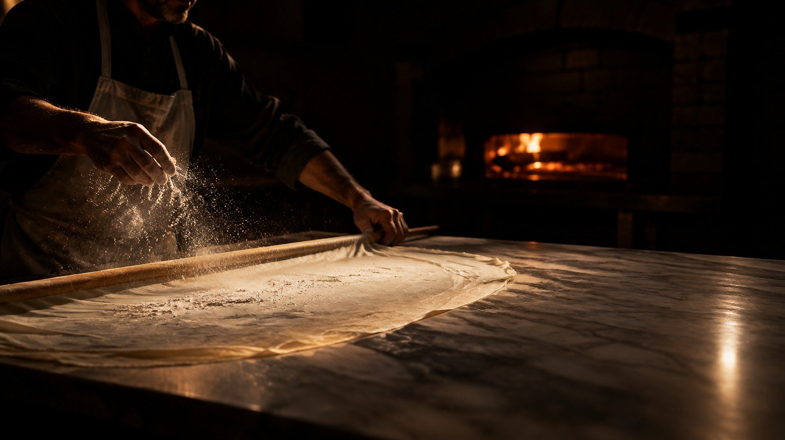
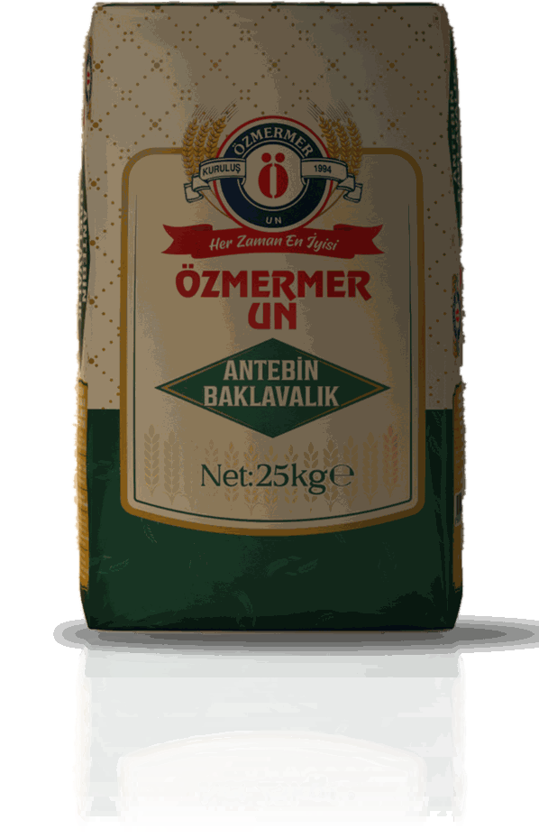

Tatlı Hayat Serisi
Antebin Baklavalık Un
Baklavacılar ve tatlıcılar için
- Makina açımı baklava imalatına uygundur
- Açım sırasında kuruma ve yapışma olmaz
- Şerbetini iyi çeker ve güzel renk alır
- Ağızda dağılan hışır (gevrek) bir yapıya sahiptir
- Uzun süre parlaklığını ve tazeliğini korur
- Beklediğinde çökme yapmaz
- Protein
- en az %12
- Kül
- en çok %0,65
- Rutubet
- en çok %14,5
Ambalaj 50 kg PP çuval · 25 kg kraft